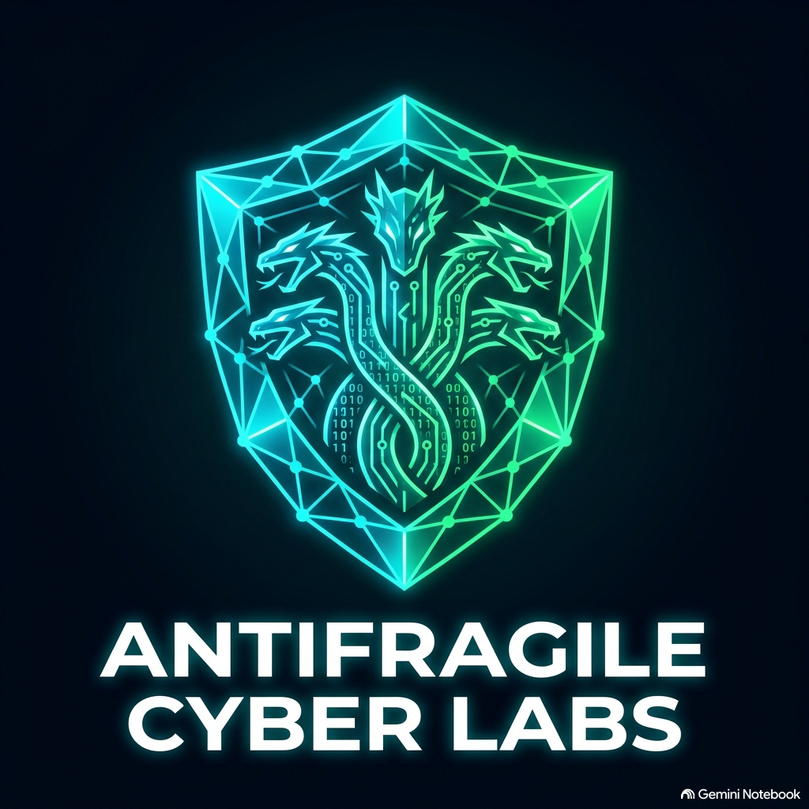

Estructura & Semántica HTML5
Fundamentos de maquetación semántica, organización modular de archivos y elementos del estándar HTML5.
Acceder a Misión
Antifragile Cyber Labs — Monitoreo & Bitácora de Red
Antifragile Cyber Labs es un portal educativo diseñado para la asignatura de Desarrollo de Aplicaciones de Red. Su propósito central es gestionar y documentar la arquitectura web, las bitácoras técnicas de ciberseguridad y las prácticas del laboratorio estructuradas en misiones operativas.
Selecciona una misión a continuación para consultar los informes de maquetación semántica, estilos Cyber Dark y control de versiones.
Fundamentos de maquetación semántica, organización modular de archivos y elementos del estándar HTML5.
Acceder a MisiónImplementación de variables CSS, modo oscuro, componentes dinámicos y maquetación responsiva.
Acceder a MisiónGestión de repositorios locales con Git, configuración de llaves SSH y sincronización en GitHub.
Acceder a Misión